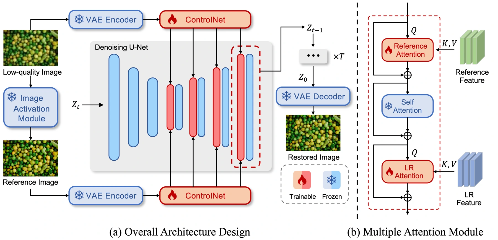
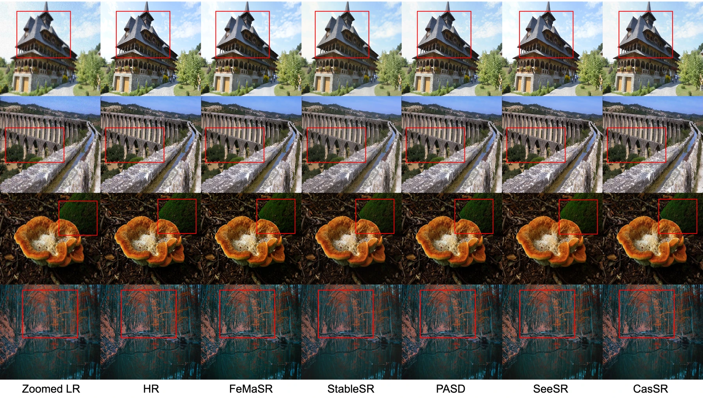

Real-world super-resolution asks a diffusion model to do two jobs at once. It must infer what the degraded image contains, and it must generate a high-resolution version of it — and it does both from one conditioning signal that is itself damaged.
真实场景的超分辨率要求一个扩散模型同时做两件事：推断退化图像里有什么，并生成它的高分辨率版本——而这两件事都只能基于一个本身就已损坏的条件信号。
The failure follows directly. When the condition is uninformative, the prior takes over and produces the most plausible content rather than the correct content. That is where semantic loss and invented detail come from: not from a weak prior, but from a prior asked to resolve an ambiguity it was given no evidence to resolve.
失败由此直接而来。当条件缺乏信息量，先验便接管一切，产出最合理的内容而非正确的内容。语义丢失与凭空细节正是来源于此：不是先验太弱，而是先验被要求去消解一个它没有任何证据可依据的歧义。
CasSR separates the two jobs in sequence. A first stage produces a preliminary reference image that is cleaner and more informative than the original observation; a second, cascaded controllable diffusion stage generates the final result from it. On DIV2K validation this improves MUSIQ by 3.82% and MANIQA by 7.05% over the next-best compared method.
CasSR 按顺序把这两件事分开：第一阶段生成一张比原始观测更干净、信息量更足的初步参考图；第二阶段由级联可控扩散模型以它为条件生成最终结果。在 DIV2K 验证集上，这带来相对次优方法 MUSIQ 3.82%、MANIQA 7.05% 的提升。
Two jobs, one condition: inferring content and generating detail are forced into a single diffusion pass, and when the condition is badly degraded the prior resolves the ambiguity by inventing.
两件事挤在一个条件里：推断内容与生成细节被压进同一次扩散；当条件严重退化时，先验只能靠编造来消解歧义。
A preliminary reference image is generated first to extract content and reduce degradation, then a cascaded controllable diffusion model generates from that reference, with a multi-attention mechanism tying the backbone back to the original image.
先生成一张初步参考图以提取内容、减轻退化，随后由级联可控扩散模型以该参考为条件生成；多注意力机制则把骨干重新锚定回原始图像。
Relative improvements of 3.82% in MUSIQ and 7.05% in MANIQA on DIV2K validation over the next-best compared method, with visual comparisons showing retention of small identifying details such as a penguin’s eye and wing boundaries.
DIV2K 验证集上相对次优对比方法的提升为 MUSIQ 3.82%、MANIQA 7.05%；视觉对比显示企鹅的眼睛、翅膀轮廓等小型识别性细节得以保留。
Improving the evidence before generating先改善证据，再生成
The first stage exists to change what the second stage receives. Rather than conditioning generation on the raw degraded observation, the cascade produces a preliminary reference — less degraded, with clearer content — and conditions the generative pass on that.
第一阶段的存在是为了改变第二阶段所接收的东西。级联不把生成条件建立在原始退化观测上，而是先产出一张退化更轻、内容更清晰的初步参考图，再以它为条件进行生成。
The reference is not treated as ground truth, and the distinction matters. It is better-conditioned evidence: easier to extract semantics from, closer to the clean image in the ways that guide generation, yet still a reconstruction carrying its own errors.
这张参考图并不被当作真值，而这个区分很重要。它是一份条件更好的证据：语义更容易提取，在引导生成的那些方面更接近清晰图像，但它仍然是一张带有自身错误的重建结果。
This is worth separating from ordinary multi-stage super-resolution. The goal of the first stage is not to produce a good image; it is to produce a condition the generative prior can use well. Those are different objectives, and judging the intermediate output as a final result misreads the design.
这一点值得与常见的多阶段超分辨率区分开。第一阶段的目标不是产出一张好图，而是产出一个生成先验能用好的条件。这是两个不同的目标；把中间输出当作最终结果来评判，会误读整个设计。


Keeping generation tied to the original让生成始终锚定原图
A cleaner reference creates its own risk: the generative stage may drift toward the reference’s interpretation and away from the actual observation. The multi-attention mechanism is the counterweight, strengthening how the text-to-image backbone draws on the original image rather than only on the reference.
更干净的参考图也带来它自己的风险：生成阶段可能偏向参考图的解释，而偏离真实观测。多注意力机制就是那个配重——它强化文生图骨干对原始图像的取用，而不只是对参考图的取用。
This is why both stages have to be judged together. The first changes the evidence; the second decides how much that evidence is trusted versus how much the pretrained visual prior is allowed to fill in. Improving either one alone is not the same as improving the pair.
这正是两个阶段必须被放在一起评判的原因。第一阶段改变证据，第二阶段决定这份证据被信任到什么程度、以及预训练视觉先验被允许填补多少。单独改善其中任何一级，都不等于改善了这个组合。
The general pattern — restore the condition, then generate — is the transferable part. Asking a powerful prior to resolve every ambiguity at once wastes its capacity; handing it a partially disambiguated input lets the same prior spend that capacity on detail.
可迁移的是那个通用模式：先修复条件，再生成。要求一个强大的先验一次性消解所有歧义，是在浪费它的容量；把一份已部分消歧的输入交给它，同一个先验才能把容量花在细节上。
Where the cascade preserves detail级联在哪些地方保住了细节
The comparison covers GAN-based and diffusion-based methods on DIV2K validation, DRealSR and RealSR, reporting reference-based perceptual distances alongside no-reference quality measures and detailed visual comparisons.
对比覆盖 DIV2K 验证集、DRealSR 与 RealSR 上的 GAN 类与扩散类方法，同时报告基于参考的感知距离、无参考质量指标与细致的视觉对比。
The reported relative improvements on DIV2K validation are 3.82% in MUSIQ and 7.05% in MANIQA over the next-best compared method. Visual examples are the more informative evidence here: cases where the cascade preserves a small identifying detail — a penguin’s eye, the boundary of a wing — are exactly the cases where a single-stage prior would have substituted a plausible one.
所报告的 DIV2K 验证集提升为相对次优方法 MUSIQ 3.82%、MANIQA 7.05%。这里更有信息量的证据是视觉样例：级联保住了小型识别性细节——企鹅的眼睛、翅膀的轮廓——的那些情形，恰恰正是单阶段先验会替换成一个合理猜测的情形。
Performance varies across DRealSR and RealSR, and that variation should be read rather than averaged. The mechanism depends on the first stage extracting usable content, so the benefit is largest where degradation is severe but structure survives, and smaller where the input is already near the limit of what the reference stage can recover.
在 DRealSR 与 RealSR 上表现存在差异，而这种差异应当被阅读而非被平均掉。该机制依赖第一阶段提取出可用内容，因此在退化严重但结构尚存的情形下收益最大，而在输入已接近参考阶段恢复极限时收益较小。


A prior needs an anchor先验需要一个锚点
The idea that generalises is making the condition an object of restoration instead of a fixed input. Most work treats conditioning as given and improves the generator; this treats the quality of the evidence as a variable worth spending a stage on.
可推广的思路是：把条件本身变成被恢复的对象，而不是一个固定输入。多数工作把条件化视为既定，只去改进生成器；这里则把证据的质量当作一个值得花一个阶段去处理的变量。
The obvious cost is error propagation. If the preliminary stage commits to the wrong content, the second stage renders that commitment convincingly — a harder failure to detect than a one-stage hallucination, because the output looks clean and internally coherent.
显然的代价是误差传播。如果初步阶段认错了内容，第二阶段会把这个错误渲染得极其可信——这比单阶段幻觉更难察觉，因为输出看起来干净且内部自洽。
That suggests how to read results of this kind. Judge a final image on attractive detail and on consistency with the original observation, and treat the two as separate checks. A cascade improving both is doing what the design claims; one improving only the first is amplifying its own errors.
这也提示了应当如何阅读这类结果：对一张最终图像，分别评判它的细节吸引力与它对原始观测的一致性，并把两者当作两次独立的检查。两个都改善的级联，才是在做设计所声称的事；只改善前者的级联，是在放大自己的错误。
Paper & authors
CasSR: Activating Image Power for Real-World Image Super-Resolution
arXiv 2024
Cite this work
@misc{chen2024cassractivatingimagepower,
title = {CasSR: Activating Image Power for Real-World Image Super-Resolution},
author = {Haolan Chen
and Jinhua Hao
and Kai Zhao
and Kun Yuan
and Ming Sun
and Chao Zhou
and Wei Hu},
year = {2024},
eprint = {2403.11451},
archivePrefix = {arXiv},
primaryClass = {cs.CV},
url = {https://arxiv.org/abs/2403.11451}
}